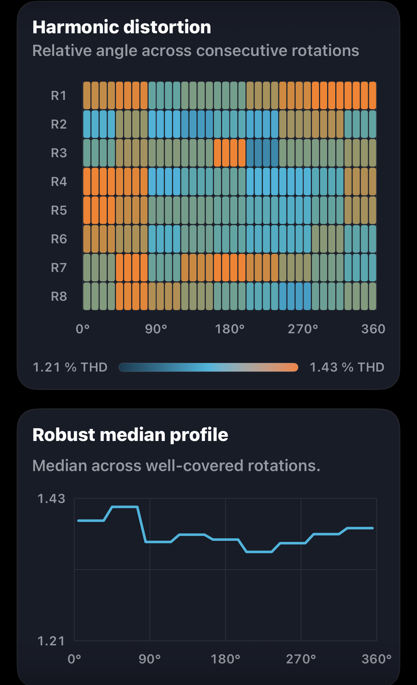
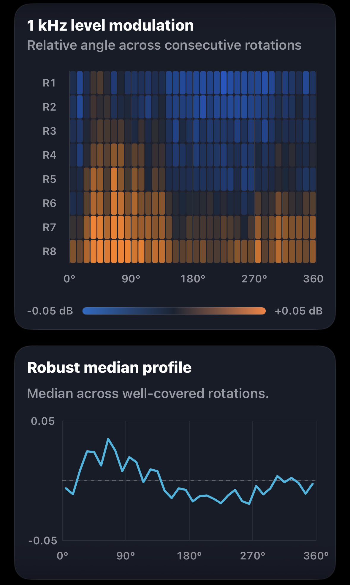

Speed deviation

Left channel selected

Groove Scope measurement · GS-2026-0011
Groove Scope made azimuth adjustment straightforward on this vintage Thorens. A bent cantilever limits what the cartridge results can tell us, while the rotation fingerprints point to further work on the turntable.
Measurement at a glance
These values describe the playback chain after azimuth adjustment. They come from the original Groove Scope PDF.
Rotation fingerprints
Each view pairs Groove Scope’s angular heatmap with its robust median profile. Choose L or R on each card. Channel assignments follow the supplied filenames.
Left channel selected

Left channel selected

Left channel selected

Left channel selected
Both channels show eight revolutions (R1–R8), using each plot’s own angular reference. On smaller screens, swipe horizontally to browse all four plots.
Azimuth and cartridge condition
The azimuth was substantially worse at the start of the session. Groove Scope made the adjustment straightforward. The report preserves the final capture, which shows electrical crosstalk of −18.4 dB L→R and −17.0 dB R→L, with a reported directional difference of 1.45 dB. The improvement is an observation from the session. Only the post-adjustment values are available.
The VM95SH had a bent cantilever. That makes this a borderline case, and the crosstalk, channel balance and distortion results describe this particular specimen and setup. A healthy VM95SH would be needed for a representative comparison.
Rotational behaviour
Playback averaged 33.29 RPM, 0.12% below nominal, with 0.030% DIN-shaped wow and flutter RMS. The speed fingerprints show slower and faster portions of the turn repeating across eight revolutions in both channel plots.
The repeated pattern gives us a reason to investigate the Thorens’ rotation. This capture leaves the cause open.
Measurement chain
The original report identifies the turntable, arm, cartridge and ART preamp. It does not specify the preamp model or capture input.
Open technical record
The editorial review connects directly to the source report, structured record, checksums, measurement method and original asset archive.
Measurement results
The table preserves the report’s figures for playback speed, weighted and unweighted stability, channel behaviour and harmonic distortion.
| Metric | Measured result |
|---|---|
| Playback speed under stylus load | 33.29 RPM |
| Playback speed error | −0.12% vs 33⅓ RPM |
| Settled speed range | 33.23–33.36 RPM |
| Settled speed span | 0.13 RPM |
| DIN-shaped wow & flutter RMS | 0.030% |
| Raw speed variation RMS | ±0.108% |
| Raw speed variation, 2-sigma | ±0.216% |
| Raw wow RMS | 0.101% |
| Raw flutter RMS | 0.037% |
| Channel balance, L−R | +2.90 dB |
| Average channel separation at 1 kHz | 17.7 dB |
| Electrical crosstalk, L→R | −18.4 dB |
| Electrical crosstalk, R→L | −17.0 dB |
| Crosstalk balance / directional difference | 1.45 dB |
| Total harmonic distortion | Left 1.37%, right 1.26% |
| THD difference, L−R | +0.11 percentage points (source report) |
| Second harmonic (H2) | Left −37.3 dB, right −38.1 dB |
| Third harmonic (H3) | Left −68.1 dB, right −59.5 dB |
| Fourth harmonic (H4) | Left −76.5 dB, right −72.0 dB |
| Fifth harmonic (H5) | Left −75.2 dB, right −71.6 dB |
| H2 difference summary | Left 0.8 dB higher (source report) |
| H3 difference summary | Right 8.6 dB higher (source report) |
| Harmonic reliability | Steady during recording, suitable for setup guidance. |
The directional crosstalk difference retains the report’s precision and may differ from subtraction of the rounded channel values. The report suggests checking routing and gain, then repeating the capture because of the channel-level difference.